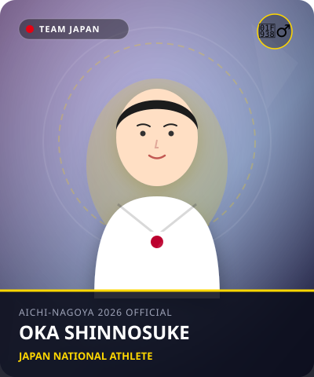

体操
•
体操 / 男子個人総合 / 平行棒 / 鉄棒
おか しんのすけ
岡 慎之助
Shinnosuke Oka
🏢 所属: 徳洲会体操クラブ
🏅 パリ五輪3冠（団体・個人総合・鉄棒）🏅 世界ジュニア王者🏅 新世代体操キング
パリで3つの金メダルを胸に抱いた若き偉才。研ぎ澄まされた美しさと超高難度技の結晶
経歴・これまでの歩み
中学卒業後に名門・徳洲会体操クラブの門を叩き、通信制高校で体操漬けの日々を送る。2019年世界ジュニア選手権で個人総合優勝。右膝前十字靭帯断裂の大怪我を不屈のリハビリで克服し、2024年パリ五輪では団体・個人総合・鉄棒で金メダル、平行棒で銅メダルの計4つのメダルを獲得する驚異の活躍を見せた。
主要大会ハイライト戦績
2024年
パリオリンピック
個人総合 金 / 鉄棒 金 / 団体 金 / 平行棒 銅
2024年
NHK杯
初優勝（パリ五輪代表内定）
2019年
世界ジュニア体操
個人総合 金メダル / 団体 金メダル
プレイスタイル＆世界を制する武器
つま先・指先まで神経が行き届いたEスコア（実施点）の高さ。倒立でのブレのない静止、平行棒の滑らかな移行、鉄棒での美しい姿勢が際立ちます。
愛知・名古屋2026への決意とメッセージ
大会スケジュール＆観戦のツボ
🗓️ 出場予定日程・会場
2026年9月22日〜26日（愛知県体育館 新アリーナ）
👀 観戦の注目ポイント
種目ごとの姿勢の美しさと、揺るぎない精神力で挑む平行棒・鉄棒での高難度コンビネーション。